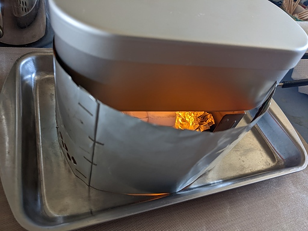
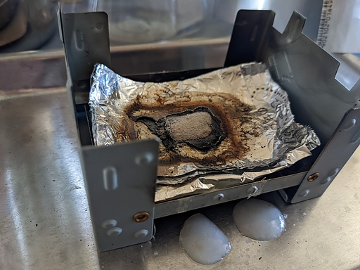
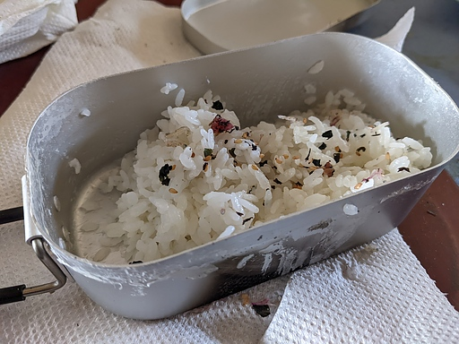

そろそろ暖い季節となりアウトドア・ハイシーズンに突入しそうな昨今なので、去年ソロに良さそうだと思って購入したダイソー・メスティンの一番小さなサイズのものと、エスビット系の固形燃料を使った自動炊飯のテストをしてみた。
テストに使ったのは以下になる。
まずはダイソー・メスティンに米を入れ水で洗い、洗い終わったら水 100ml を入れて 30 分ほど吸水させる。
30 分経ったらポケットストーブに 10g と 4g の燃料を置き、着火してメスティンを乗せる。なお燃料の分量は YouTube や他の Blog を参考におおよそこれくらいでよいであろうと思える量とした。

あくまでほったらかし炊飯のテストだが、テストなので炊飯状況を見守ることにした。
メスティン内の水が沸騰すると蓋が持ち上がってしまうのは通常のメスティンほったらかし炊飯と同様なので、蓋が持ち上がり始めたら重しを蓋に乗せると良い。
そのまま放っておいて眺めていると、燃料が燃え尽きる前にチリチリと音がし始めたので消火してメスティンを下ろし、通常通りタオルにくるんで蒸らしに入る。ただし燃料にエスビット系の燃料を使っているので煤・タール対策としてキッチンペーパーでくるんだあとタオルにくるむ。キッチンペーパーでなくてもティッシュペーパーでも当然問題ない。

15 分ほど蒸らしたあと蓋を開けると、無事ご飯が炊けていた。食べてみても自宅の炊飯器で炊いたご飯より美味しいかも。

今回燃料は合計 14g としたが全て燃焼してしまう前に消火の必要があったことから、もちろん気温や風の条件にも左右されるだろうが、燃料は 10g 程度でいいかもしれない。
以上参考に慣れば幸いである。